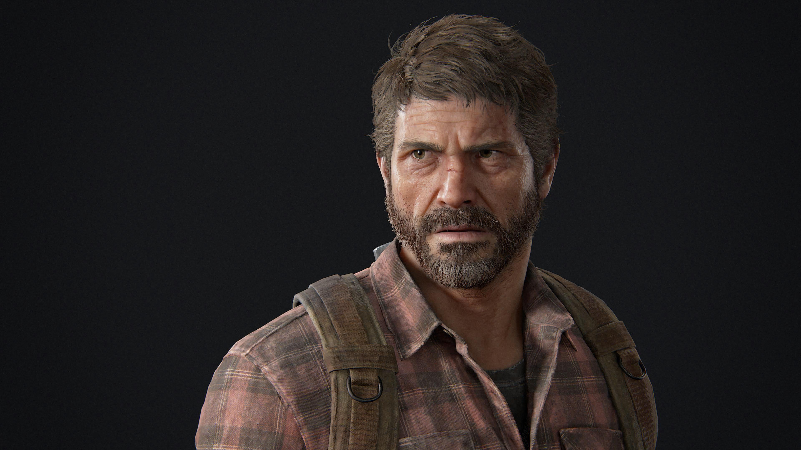
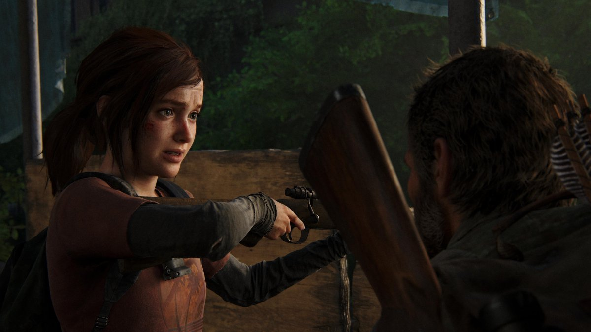
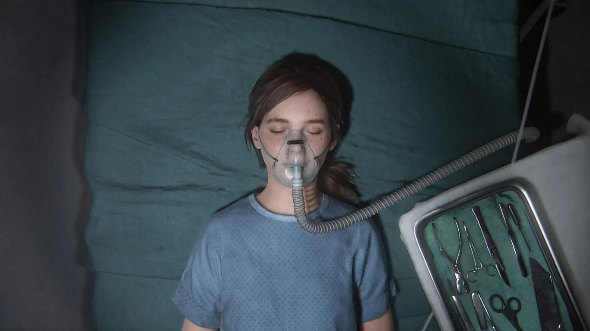
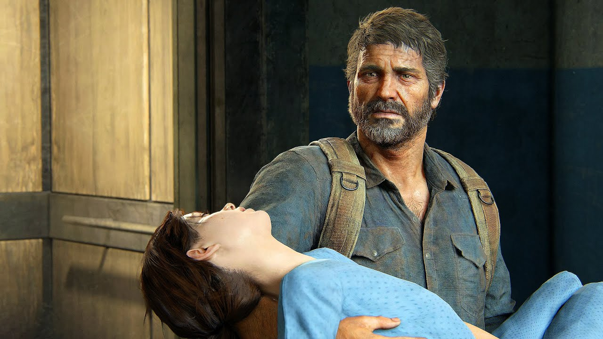
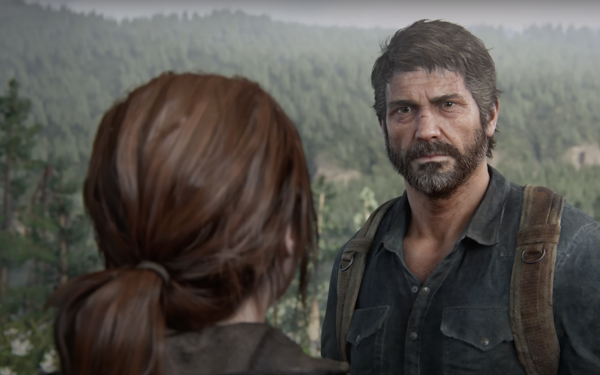
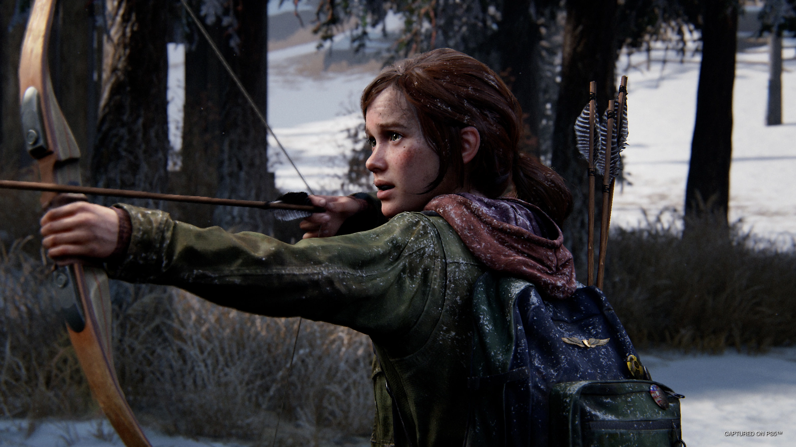
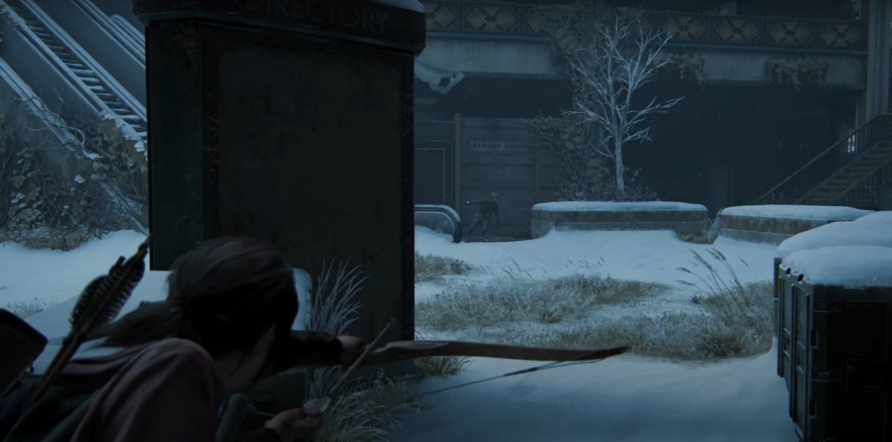
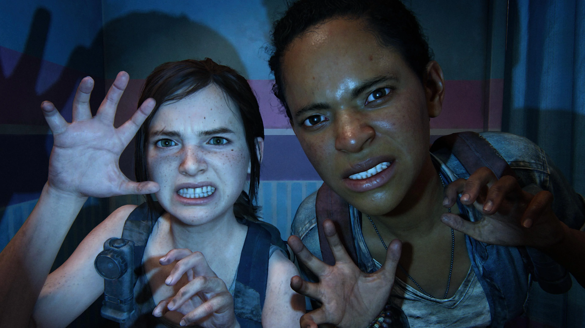

ALERTA DE SPOILER ⚠️
Atenção: Se você nunca jogou e não gosta de spoilers, recomendo não prosseguir com a leitura 🙈

"The Last of Us" é uma jornada emocional e intensa que segue Joel, um homem marcado pela perda, e Ellie, uma adolescente corajosa, em um mundo pós-apocalíptico devastado por uma infecção que transformou grande parte da população em criaturas hostis. Aqui está um resumo dos principais acontecimentos do jogo:
O jogo começa mostrando a vida de Joel antes do surto, incluindo a morte de sua filha, Sarah, durante os primeiros estágios da infecção.

20 anos depois, Joel agora vive em uma zona de quarentena militar em Boston, onde ele trabalha como contrabandista, fazendo entregas de mercadorias ilegais.
Joel é contratado por uma milícia rebelde chamada Fireflies para escoltar Ellie, uma jovem de 14 anos, para fora da cidade. Ellie é imune à infecção e eles acreditam que ela pode ser a chave para encontrar uma cura.
Joel relutantemente concorda em levar Ellie para encontrar os Fireflies. Ao longo da jornada, eles enfrentam diversos perigos, incluindo infectados, sobreviventes hostis e forças militares.

Durante a jornada, Joel e Ellie desenvolvem um vínculo forte e afetuoso, com Ellie se tornando uma figura de substituição para a filha que Joel perdeu. Ellie possui uma personalidade forte ao mesmo tempo que demonstra ter medo de ficar sozinha. Em todo o tempo, ela está disposta a ajudar e até proteger Joel.
Joel descobre que os Fireflies planejam usar Ellie para desenvolver uma cura, o que exigiria sacrificar sua vida. Depois de entender a gravidade da situação, lembrar de todos os infectados que mataram, ladrões e criminosos que enfrentaram, ele toma uma decisão...
Joel decide não perder Ellie. Ele criou vínculos muito profundos, e não conseguiu imaginar a humanidade curada, sem que ela estivesse viva. Com isso, Joel resgata Ellie dos Fireflies e eles escapam juntos, enfrentando uma batalha feroz contra os militares e os Fireflies no processo.
O final da Parte 1 de The Last Of Us termina com Joel e Ellie caminhando após a fuga do hospital. Joel mente para Ellie sobre o que aconteceu, dizendo a ela que os Fireflies já haviam encontrado muitos outros imunes e que nenhum deles era uma cura. Ellie parece desconfiada, mas aceita a história de Joel.
NÃO ACABA POR AÍ...
LEFT BEHIND
"Left Behind" é uma expansão autônoma para "The Last of Us", lançada como conteúdo para download adicional. O jogo expande a narrativa principal, focando em eventos anteriores e posteriores ao enredo principal.
Antes do Jogo Principal:"Left Behind" se passa em duas linhas do tempo diferentes. Uma delas ocorre antes dos eventos de "The Last of Us" e a outra ocorre durante uma lacuna na narrativa principal.
História Anterior: Nessa parte, a narrativa se concentra em Ellie antes de conhecer Joel. Ela está em uma zona de quarentena militar em Boston e faz amizade com uma garota chamada Riley, que é sua melhor amiga. Juntas, elas exploram um shopping abandonado, relembram memórias do passado e confrontam os perigos do mundo pós-apocalíptico.

Lacuna na História Principal: Na segunda linha do tempo, o jogo se passa durante um momento em que Joel está ferido e inconsciente. Ellie se vê sozinha em uma loja de departamentos abandonada, lutando para encontrar suprimentos médicos para salvar Joel. Durante esse período, ela lida com os desafios do ambiente hostil e reflete sobre suas emoções e conexões com Joel.
 
Em suas memórias, ela se recorda dos momentos em que viveu com Riley no shopping e de como ela foi atacada por um infectado, carregando para sempre a cicatriz em seu antebraço.


Left Behind é uma adição fantástica ao universo de "The Last of Us". Ela não apenas expande a história, mas também oferece insights emocionantes sobre os personagens e o mundo pós-apocalíptico em que vivem. A narrativa é bem construída, explorando temas como amizade, sobrevivência e sacrifício de uma maneira envolvente.
Além disso, o jogo mantém a alta qualidade visual e mecânica que é característica da Naughty Dog, proporcionando uma experiência imersiva e emocionante. Os momentos de jogabilidade são complementados por sequências cinematográficas que ajudam a contar a história de forma eficaz.
No geral, "Left Behind" é uma parte essencial da experiência de "The Last of Us" e uma expansão que os fãs do jogo certamente apreciarão.